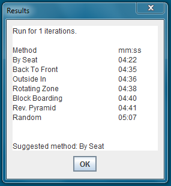

The results screen is displayed after the simuation has finished running.

The results are displayed in ascending order showing the fastest boarding method for your chosen plane layout. The screen gives information for the suggested boarding procedure based on the final results.